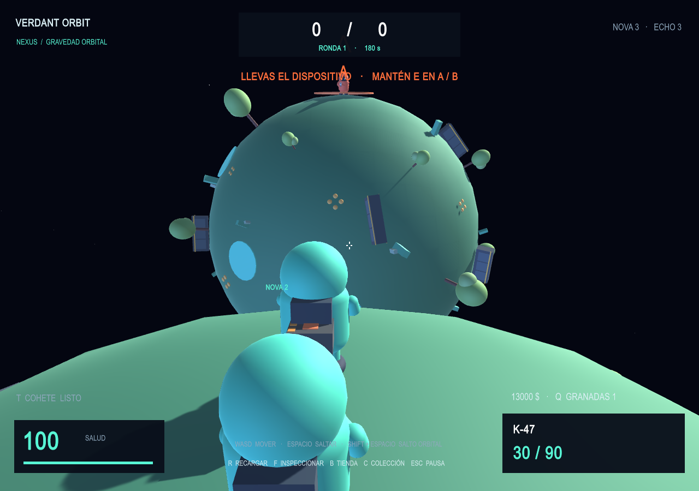
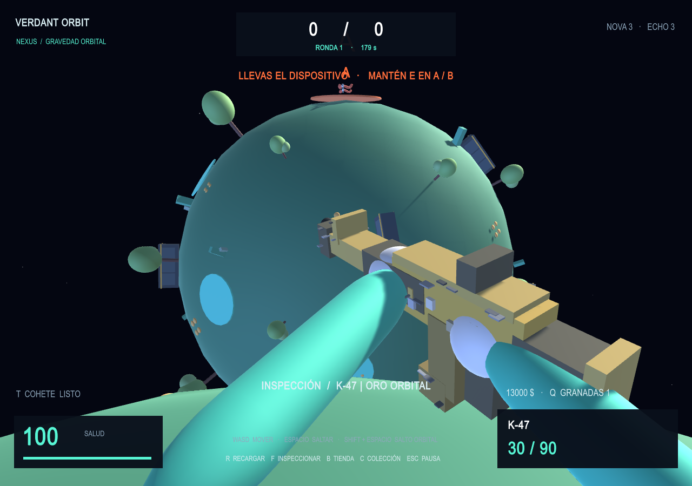

NOX GAME STUDIO · PROYECTO INDEPENDIENTE
LA GRAVEDAD
ES TU
VENTAJA.
El combate no termina en el horizonte. Corre alrededor de un planeta, salta a otra órbita y encuentra un nuevo ángulo para tu equipo.

01 / CAMBIA TU PUNTO DE VISTA
Cada planeta.
Un nuevo frente.
Gravitas Strike es un juego de acción en tercera persona con personajes redondeados y articulados. La gravedad cambia cómo te mueves; tú decides desde dónde atacar.
- 01
Pies en el planeta
Tu personaje se orienta hacia el núcleo. Recorre la superficie completa y defiende una posición incluso desde el otro polo.
- 02
Sal del campo gravitatorio
Usa el impulso orbital para abandonar un planeta y alcanzar el siguiente. En el espacio, el movimiento conserva su impulso.
- 03
Encuentra tu ángulo
Las balas viajan rectas. Los planetas y las barricadas ofrecen cobertura; las granadas rebotan, explotan y lanzan los cuerpos con físicas.
02 / JUEGA POR EL EQUIPO
Tu misión. Tu órbita.
1v1 / 3v3 / 5v5
Un dispositivo.
Dos puntos. Una decisión.
Los atacantes deben plantar el dispositivo de colapso gravitacional en A o B. Los defensores protegen los puntos y pueden desactivarlo. El portador cambia entre rondas.
Vuelve a la acción.
Suma por tu equipo.
Un modo directo con reapariciones para practicar movimiento, armas y rutas entre planetas. La partida termina al alcanzar 20 bajas de equipo o al agotarse el tiempo.

03 / ELIGE TU EQUIPO
Cada compra
cuenta.
Empiezas con 800 $ de la partida y sin armas. Pistolas, subfusiles, escopetas, rifles, francotiradores y ametralladoras tienen precios, daño, munición y retroceso diferentes.
Los acabados de las armas tienen identidad, desgaste y patrón. Inspecciona cada pieza de cerca y descubre recompensas al completar partidas.
Cómo se guarda la colección04 / ESTADO DEL PROYECTO
Una nueva órbita.
Paso a paso.
PROTOTIPO EN DESARROLLO
El prototipo para Windows permite jugar contra bots. La integración online incluye grupos por código, chat y un perfil con nivel, XP y estadísticas asociado a una cuenta Epic.
Epic ha aprobado y publicado la marca de Gravitas Strike. Se ha comprobado el inicio de sesión con una cuenta externa al estudio y la lectura y escritura del perfil en Epic. Siguen pendientes las pruebas completas de partidas, grupos, chat y recuperación entre dos instalaciones. La descarga de prueba para Windows está disponible en itch.io. La versión web con juego cruzado está en validación y todavía no está publicada.
El prototipo incorpora rangos, medallas, historial, emparejamiento por nivel y un plazo de reconexión. Un servicio separado calcula los puntos y las sanciones por abandono; las pruebas completas entre jugadores reales siguen pendientes. Las funciones multijugador y la recuperación del perfil entre distintos ordenadores siguen en fase de pruebas. Las capturas muestran una versión en desarrollo y pueden cambiar.
Contactar con el desarrolladorANTES DE ENTRAR
Sin perder
el norte.
¿Qué se guarda con mi cuenta Epic?
El sistema de perfil está preparado para sincronizar nombre visible, nivel, XP y estadísticas mediante Epic Online Services. Para recuperar el progreso en otro PC, el guardado debe haberse sincronizado. La recuperación real entre dispositivos todavía está en pruebas.
¿Mis skins y cohetes también viajan entre PCs?
Con cuenta Epic, la colección se conserva en el servicio de Gravitas: skins, cofres, llaves, pegatinas y cohetes. El invitado mantiene una colección local separada. La comprobación completa de recuperación entre instalaciones sigue en curso.
¿La web pide mi contraseña de Epic?
No. Esta web es informativa. El acceso del juego se realiza a través de Epic. No envíes contraseñas ni códigos de acceso al correo de soporte.
¿Cómo solicito una copia o el borrado de mis datos?
Escribe a gorkaokami@gmail.com indicando «Gravitas Strike · Privacidad». Consulta el procedimiento y los límites del borrado en la política de privacidad.
DESARROLLO INDEPENDIENTE EN ESPAÑA
NoX Game Studio
Gravitas Strike es un proyecto independiente de Gorka Lopez Llaguno. NoX Game Studio es el nombre del proyecto de desarrollo, no una sociedad mercantil.